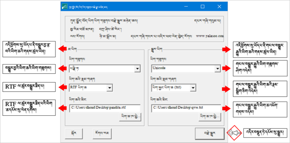
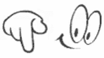

ཡིག་གཟུགས་ཕན་ཚུན་བསྒྱུར་ཆས། Tibetan Font Converter 藏文的字体转换器

ཆས་ འདི་ནི་ རྒྱལ་ མི་ གཅིག་ པའི་ བོད་ ཡིག་ཆ་ རྣམས་ ཚུལ་ བརྗེ་ རེད Y འདིས་ བོད་ ཡིག་ ནས་ ནས་ Wylie ལེ་ དང་ ལེ་ ནས་ བོད་ ཡིག་ བསྒྱུར་ ཆས་ འདི་ དབྱིན་ བོད་ ཡིག རྒྱ་ ཡིག་ རིགས་ རིགས་ བདེ་ བ་ དེ་ བཀོལ་ Kyi stangs go_rim la gzigs _ bkol
zhe ge shi de zang_wen zi_ti bu_tong xiang_hu zhuan_huan de ruan_jian. Ke_yi ruan_jian zai ci yong Wiley zang_wen he zhi_jian xiang_hu zhuan_huan, ju_you cang han_ying san_zhong yu_yan, fang_bian shi_yong请看 具体 的。
🔊 གཤམ་ བཀོད་ ཚོད་ དྲི་ བ་ ཁག་ ཤེས་ བླངས་ ཆོག པར་ ལོངས་ དང་ བ་ རྣམས་ ལ་ ལན་ 您 能 回答 以下 问题 ， 那么 您
ཚོད་ལྟའི་དྲི་ལན་དག་ཤེས་དགོས་པའི་ངེས་པ་མེད་པས། ཐད་ཀར་“མི་ཤེས་”འདེམ་ཆོག
不一定要知道测试的答案，可以选“不知道”
[矩阵量表题] *
|
ཤེས། 知道 |
མི་ཤེས་། 不知道 |
༡༽ ཡིག་གཟུགས་བསྒྱུར་ཆས་UTFC ཕབ་ལེན་བྱ་གནས་གང་ཡིན་ཤེས་སམ།你知道在哪里可下载UTFC字体转换器吗？ |
○ |
○ |
༢༽ ཡིག་གཟུགས་ཕན་ཚུན་མ་བསྒྱུར་སྔོན་རྣམ་སྒྲིག་གང་ལ་བསྒྱུར་དགོས་ཤེས་སམ། 字体未转换前，需要弄什么格式呢？ |
○ |
○ |
༣༽ རྣམ་སྒྲིག་RTF ལ་གང་ནས་བསྒྱུར་ཐུབ་པ་ཤེས་སམ། 怎么转成RFT的格式呢？ |
○ |
○ |
༤༽ Wylie བོད་ཡིག་ཡིག་གཟུགས་ལ་བསྒྱུར་སྟངས་ཤེས་སམ། 怎样把Wylie转换成藏文？ |
○ |
○ |
༡༽ ཡིག་གཟུགས་བསྒྱུར་ཆས་འཚོལ་སྟངས། 字体转换器的查找方法
འཚོལ་བའི་རིམ་པ། 查找程序
🢣 百度 འཚོལ་བཤེར་དྲ་ཚིགས་སྒོ་ཕྱེས་ཏེ་yalasoo.com ཕྲིས། 用百度搜索yalasoo.com
🢣 བཙལ་འབྲས་དང་བོའི་སྟེང་སྣུན། 点击第一个搜素结果
🢣 བོད་ཡིག་ཟེར་བར་སྣུན། 点击藏文
🢣 ཡིག་གཟུགས་བརྗེ་བསྒྱུར་གྱི་བྱ་རིམ། UTFC ལ་སྣུན།点击字体变换程序UTFC
🢣 མདའ་རྟགས་གཏད་ས་དེར་སྣུན། 点击箭头所指的点
༢༽ ཕབ་ལེན་བྱས་རྗེས་ཟྭ་ཕྱེ་བའི་རིམ་པ། 下载后解锁的程序
ཟྭ་ཕྱེ་སྟངས་ཀྱི་རིམ་པ་ནི། 解锁顺序
🢣  ལ་གཉིས་རྡེབ་བྱོས། 双击
ལ་གཉིས་རྡེབ་བྱོས། 双击
🢣 མཉེན་ཆས་ཀྱི་ཟྭ་ཕྱེས། 打开软件锁
🢣 UTFC ལ་གཉིས་རྡེབ་བྱོས།双击UTFC
🢣 UTFC བོད་ཡིག་ཟེར་བར་གཉིས་རྡེབ་བྱོས།双击UTFC藏文
༡༽ ཡིག་གཟུགས་བསྒྱུར་ཆས་དེ་གང་ནས་ཕབ་ལེན་བྱ་དགོས་ཤེས་སོང་ངམ། [单选题] *
ཤེས་སོང་། 知道(正确答案) |
ཤེས་མ་སོང་། 不知道 |
|
༣༽ མཉེན་ཆས་སྒྲིག་འཇུག་ཀྱི་རིམ་པ། 安装软件的程序
མཉེན་ཆས་སྒྲིག་འཇུག་གི་རིམ་པ་ནི། 安装软件的程序是：
🢣 setup.exe ལ་གཉིས་རྡེབ་བྱོས། 双击setup.exe
🢣 finish ཟེར་བར་སྣུན། 点击finish
🢣 Close ཟེར་བར་སྣུན། 点击close
🢣 འཆར་ངོས་ཀྱི་YTFC ལ་སྣུན་དང་སྒོ་ཕྱེ་ཡོང་། 点击屏幕上的YTFC并打开
དང་བོ། ངེས་དགོས་པའི་གནད་དོན་འགའ།需要指出的几个问题
🔊 མཉེན་ཆས་འདིའི་ནང་ཡོད་པའི་ཡིག་གཟུགས་མ་འདྲ་བ་རྣམས་ཕར་ཚུར་བསྒྱུར་དུས་ངེས་པར་ཤེས་དགོས་པ་འགའ། 本软件中有几个不同字体在来回转换时必须知道的是：
🢣 བསྒྱུར་བྱའི་ཡིག་ཆ་དེའི་ཡིག་གཟུགས་གང་ཡིན་ཤེས་དགོས། 应当知道所转换的字体的属性
🢣 ཡིག་གཟུགས་དེ་རང་གི་གློག་ཀླད་ནང་ཕབ་ལེན་བྱ་དགོས། 要把字体下载到电脑里
🢣 ཐོག་མར་ཡིག་ཆ་དེ་ TRF ལ་བསྒྱུར་དགོས། 首先把文件格式转为TRF
🢣 MS word ནང་ནས་RTF ལ་བསྒྱུར་ཐུབ། 可以在Ms Word文档里转换
དཔེའི་ལམ་ནས་ངོ་སྤྲོད་ཅིག་བྱ། ང་ལ་ཡིག་གཟུགས་པཎྜིཏ་ཡིན་པའི་ཡིག་ཆ་ཞིག་ཡོད། དེ་ཕར་སམ་བྷོཊ་ལ་བསྒྱུར་དགོས། 举个例子，比如我有一个班智达字体的资料，要把它变成桑布扎字体。
ཀ༽ ངས་དང་བོ་སམ་བྷོཊའི་ཡིག་གཟུགས་ཕབ་ལེན་མ་བྱས་པར་དེ་ངོ་བཤུ་བྱས་ཏེ་MS word ནང་བཞག་པས་འདི་ལྟར་གྱུར་སོང་། 甲：像以下显示的一样，因我没把先桑布扎字体安装到电脑里。
ཁ༽ དེ་ནས་སམ་བྷོཊའི་ཡིག་གཟུགས་ཕབ་ལེན་བྱས་རྗེས་གཞི་ནས་ཡིག་འབྲུ་འཆར་སོང་། 乙：然后我把桑布扎字体下载以后就显示了完整的资料

ག༽ དེ་ནས་ཡིག་ཆའི་རྣམ་སྒྲིག་(格式) RTF ལ་བསྒྱུར་ཡོད། བསྒྱུར་སྟངས།

༢༽ ཡིག་གཟུགས་ཕར་ཚུར་མ་བསྒྱུར་སྔོན་རྣམ་སྒྲིག་གང་ལ་བསྒྱུར་དགོས་ཤེས་སོང་ངམ། 知道字体转换前要弄什么格式吗？ [单选题] *
ཤེས་སོང་། 知道(正确答案) |
ཤེས་མ་སོང་། 不知道 |
|
༣༽ ཡིག་ཆ་RTF རྣམ་སྒྲིག་ལ་གང་ནས་བསྒྱུར་ཐུབ་པ་ཤེས་སོང་ངམ། 知道在哪里可以把资料的格式换成RTF吗？ [单选题] *
ཤེས་སོང་། 知道(正确答案) |
ཤེས་མ་སོང་། 不知道 |
|
༥༽མཉེན་ཆས་ནང་དངོས་སུ་བསྒྱུར་ཚུལ།
ཡིག་ཆ་དེ་ཡིག་གཟུགས་བསྒྱུར་ཆས་བརྒྱུད་ནས་unicode ལ་བསྒྱུར་བའི་གོ་རིམ་ལ་གཟིགས། དཔེ་འདིའི་ལམ་ནས་གཞན་ལ་དེ་བཞིན་བྱེད་ཤེས་པར་བྱའོ།།

༦༽ Wylie བོད་ཡིག་ཡིག་གཟུགས་ལ་བསྒྱུར་སྟངས།
Wylie ཝེ་ལེ་བོད་ཡིག་ཡིག་གཟུགས་ལ་བསྒྱུར་ན་དེ་དང་བོ་ཡིག་རྐྱང་(.txt)ལ་བསྒྱུར་རྗེས། བོད་ཡིག་ཡིག་གཟུགས་ལ་བསྒྱུར་དགོས། བསྒྱུར་སྟངས་གོང་དང་མཚུངས།
ཀ༽Wylie པཎྜིཏའི་ཡིག་གཟུགས་ལ་བསྒྱུར་བའི་དཔེ་མཚོན།
ཁ༽Wylie པཎྜིཏའི་ཡིག་གཟུགས་ལ་མ་བསྒྱུར་བའི་སྔོན་གྱི་ཡིག་ཆ།

ག༽ Wylie བོད་ཡིག་ཡིག་གཟུགས་པཎྜིཏ་ལ་བསྒྱུར་ཟིན་པའི་ཡིག་ཆ།

༤༽ Wylie བོད་ཡིག་ཡིག་གཟུགས་ལ་བསྒྱུར་སྟངས་ཤེས་སོང་ངམ། 知道Wylie怎么转成藏文了吗？ [单选题] *
ཤེས་སོང་། 知道(正确答案) |
ཤེས་མ་སོང་། 不知道 |
|
ཕོ་མོ། 您的性别 [单选题] *
○ཕོ། 男 |
○མོ། 女 |
ཁྱེད་ཀྱི་སྐད་གདངས་མདོ་དབུས་ཁམས་གསུམ་གང་གི་སྐད་གདངས་ཡིན། 你说藏区哪种方言? [单选题] *
○དབུས་སྐད།卫藏方言 |
○ཁམས་སྐད། 康巴方言 |
○ཨམ་སྐད། 安多方言 |
○གཞན། 其他方言 |
དྲི་བ་ཡོངས་ལ་ལན་བཏབ་རྗེས་འོག་གི་་སྤེལ་་ཟེར་བ་དེའི་སྟེང་བསྣུན་ན་དངོས་སུ་སྤེལ་འགྲོ་བ་ཡིན། ཐུགས་རྗེ་ཆེ།
完成所有的问题后请您点击“提交”， 谢谢！

སྤེལ། 提交问卷